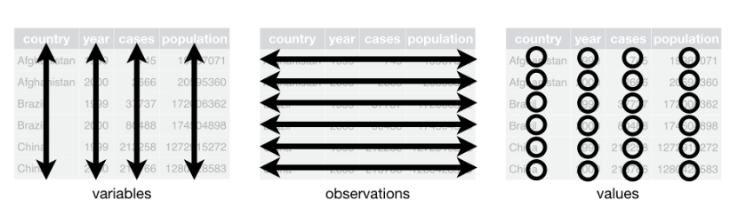
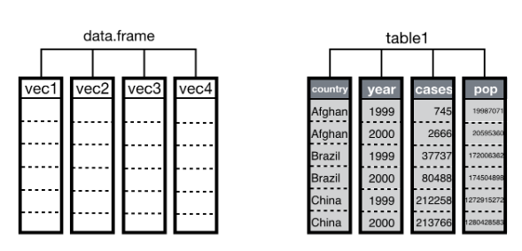
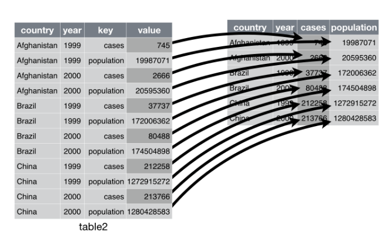
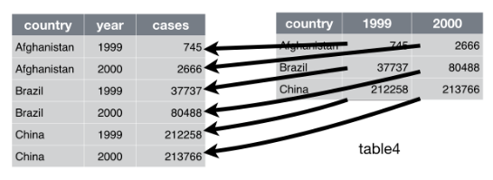

Semillero de R - FacCA
Mundo R + tidyverse II
Estadística Descriptiva con R
| Función | Descripción |
|---|---|
mean() |
Media |
median() |
Mediana |
sd() |
Desviación estándar |
var() |
Varianza |
range() |
Rango |
min() |
Valor mínimo |
max() |
Valor máximo |
quantile() |
Cuartiles, deciles y percentiles |
cor() |
Coeficiente de correlación |
IQR() |
Rango intercuartílico |
skewness() |
Coeficiente de asimetría (biblioteca moments) |
kurtosis() |
Coeficiente de curtosis (biblioteca moments) |
| Función | Descripción |
|---|---|
table() |
Tabla de frecuencias absolutas |
prop.table() |
Tabla de frecuencias relativas |
sort() |
Ordenar los datos |
sum()() |
Sumar |
colSums() |
Suma por columnas |
rowSums() |
Suma por filas |
colMeans() |
Promedios por columnas |
rowMeans() |
Promedios por filas |
Datos ordenados (tidy data)
“Tidy datasets are all alike but every messy dataset is messy in its own way.”
– Hadley Wickham
¿Qué son datos ordenados?
- Cada variable debe tener su propia columna.
- Cada observacioón debe tener su propia fila.
- Cada valor debe tener su propia celda.
¿Qué son datos ordenados?

Funciones tidyr
spread(): de formato largo a formato ancho.gather(): de formato ancho a formato largo.separate(): separar columnas.unite(): unir columnas.
Usos de las funciones tidyr
spread(data, key, value)gather(data, "variable1", "variable2", 1:3)separate(data, Separ, into = c("n1", "n2"), sep = "/")unite(data, "nueva", var1, var2, sep = "")
spread()

gather()

Ejemplos
Resultados Saber 11º
Ejemplo grupo lunes: ICFES 2017-02.
Ejemplo grupo martes: ICFES 2018-02.